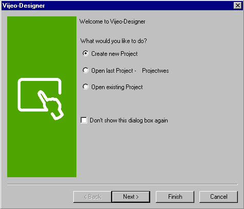
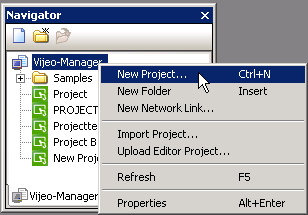
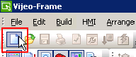
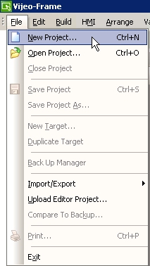
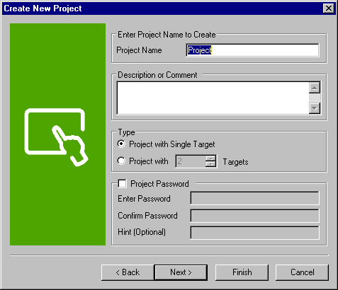
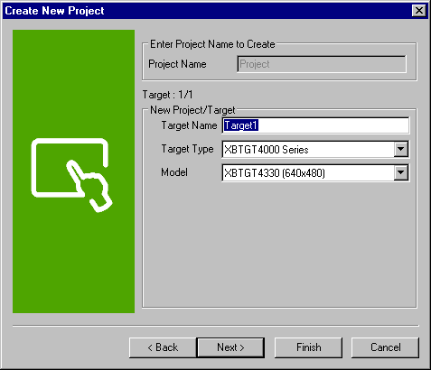
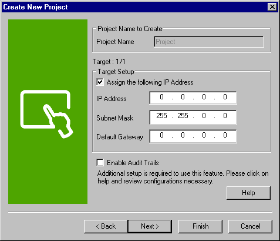
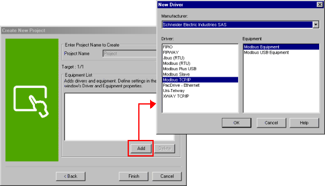
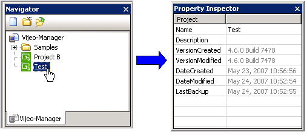
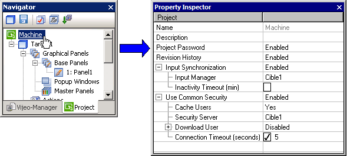

|
|
|
|
|
|
|
|
This section describes the wizard that opens when you first start up Vijeo Designer. The wizard guides you through creating a new project in Vijeo Designer.
To create a new project, select Create New Project and click Next.


You can also use the following three methods to create a project in Vijeo Designer:
In the Vijeo Manager tab of the Navigator tool window, right-click Vijeo Manager, and select New Project.

Click the New Project Icon.

From the File Menu, click New Project.

To stop the wizard from appearing at application startup, select the Don't show this dialog box again check box. You can re-enable the wizard using the properties in the Vijeo Manager node.
In the Create New Project dialog box, configure the following fields:
Project Name: Type in a name for the project
Description or Comment: If necessary, type in a description of the project. (This field is limited to a maximum of 255 characters.)
Type: Select whether your project has a single target or multiple targets. If you have multiple targets, specify the number.
Project Password: Select whether your project needs project security. If enabled, type in a password and a password hint. See Section 4.8.8, Adding Project Security for information on project security.

Configure the following fields for this dialog box:
Target Name: Type in a name for your target.
Target Type: Select the target type from the target type drop-down list. See Section 2.2, Supported Tablets, Smartphones, and Target Machines for a list of the target types supported by Vijeo Designer.
Model: Select your target model from the model drop-down list. See Section 2.2, Supported Tablets, Smartphones, and Target Machines for a list of the target models supported by Vijeo Designer.

Click Next.
Enter the target machine's IP address, and select Enable Audit Trails to enable the event logging feature. Click Help to view the steps in setting up event logging. Then click Next.

Select Add Equipment. Click Add to open the New Driver dialog box. Select the Equipment you want to add and Click Finish.
For more information on Equipment, see Chapter 5, Communications.

The new project is created and displayed in the Project tab.

The project's default settings may not be suitable for your target machine. Verify that the driver settings are compatible with your equipment.
In the Navigator window's Vijeo Manager tab, select the Project node to view and edit the Project's properties.

|
Property |
Description |
|
Name |
The project's name. Whenever a project is created, the default name "Project" is generated. If you keep the default name but have a previous project with the same name, a confirmation message will let you replace the previous project and name with the new one, or you can rename the new project. When renaming the project, its name must be unique within Vijeo Manager, must contain no more than 32 valid characters, and must follow the naming conventions. For details, see Appendix 9, Naming Conventions. |
|
Description |
Enter a description (up to 255 characters) about the project. |
|
Version Created |
Displays the Vijeo Designer version used to create the project. |
|
Version Modified |
Displays the Vijeo Designer version used to last edit the project. |
|
Date Created |
Displays the date when the project was created. |
|
Date Modified |
Displays the date when the project was last saved. |
|
Last Backup |
Displays the date when the project was last backed up. |
In the Navigator window's Project tab, select the Project node to view and edit the Project's properties.

|
Property |
Description |
|
|
Name |
The project's name. Whenever a project is created, the default name "Project" is generated. If you keep the default name but have a previous project with the same name, a confirmation message will let you replace the previous project and name with the new one, or you can rename the new project. When renaming the project, its name must be unique within Vijeo Manager, must contain no more than 32 valid characters, and must follow the naming conventions. For details, see Appendix 9, Naming Conventions. |
|
|
Description |
Enter a description (up to 255 characters) about the project. |
|
|
Project Password |
Click Enabled to add security to your projects. This prevents unauthorized users from opening protected projects and overwriting protected projects. For more information, see Section 4.8.8, Adding Project Security. |
|
|
Revision History |
Click Enabled to track the changes you make to your projects during their development. With Revision History enabled, you can add comments to the Revision History each time you save the project. For more information, see Section 4.6.5, Recording Revision History. |
|
|
Input Synchronization |
Click Enabled to set up exclusive input relationships between target machines and prevent other target machines from changing the value of variables you're working on. For more information, see Section 22.2, Setting Up Exclusive Input Relationships. |
|
|
Input Manager |
Select the target that controls which target is in exclusive input mode. |
|
|
Inactivity Timeout (min) |
To limit the amount of time a panel can remain in exclusive input, select the Inactivity Timeout check box, and specify the time in minutes. |
|
|
Use Common Security |
Click Enabled to define a common setting for security groups and security users in the project. This feature is available for target machines that can be connected using Ethernet. For more information, see Section 4.8.6, Common Security. When this property is disabled, you need to set up security groups and security users for each target machine in the project. |
|
|
Cache Users |
Defines how to confirm user security information (user name and password) when running a secured operation on a target machine. Select Yes to use both the Security Server and cached security information. If the Security Server is unavailable, the security client target uses cached security information of previously logged-in users to confirm users. The cache is cleared when the target machine is restarted. Select No to use the Security Server only. If the Security Server is unavailable, then you cannot run the secured operation on the security client target machine. |
|
|
Security Server |
Select the target machine that stores the list of security groups and security users. When a user enters security information on a target machine, it confirms the security information with the selected Security Server. If the Security Server is unavailable, and Cache Users is enabled, the target machine will confirm security information with its cached security information. If Cache Users is disabled, then login for the secured operation will fail. |
|
|
Download User |
Click Enabled to add the ability to download to a target machine. You can download to a target machine even if the Security Server is unavailable.
User Name Create a user name and password using the following rules:
Password Click the ellipsis to display the Change Password dialog box. Create a password using the following rules:
|
|
|
Connection Timeout (seconds) |
Select the check box and enter the number of seconds the target machine will attempt to connect to the Security Server. If the connection times out and Cache Users is enabled, the target machine will confirm security information with its cached list of users. If Cache Users is disabled, then login for the secured operation will fail.
|
|